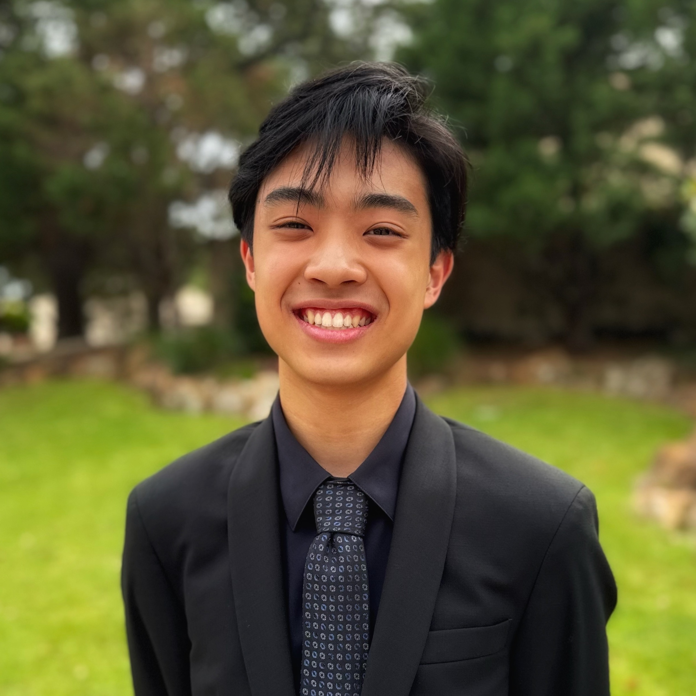

An IB senior at Plano East Senior High with a passion in Electrical & Computer Engineering, Computer Science, and AI.
Plano East Senior High School sneazmbp@gmail.com Resume
About Me
👋 Hi, I'm Marcus, a senior in the International Baccalaureate Program at Plano East Senior High
School.
🖥️ I have a deep enthusiasm for Electrical & Computer Engineering, Computer Science, and AI, and committed
to pursuing a career in these fields. My interests lead me to intersection of hardware and software, resulting in custom
mechanical keyboards and robotic arms to developing machine learning models and arcade-style mini-games.
📚 With knowledge in Python, Java, C, and web technologies, I enjoy combining my programming expertise with hands-on
hardware skills in 3D modeling, PCB design, and electronics. Each project I've created started as just an idea and became
an opportunity to push my boundaries and teaching myself whatever skills were needed.
🧑🏻🏫 Beyond my technical experience, I'm an active tutor both inside and outside school, helping students in mathematics and English,
while pursuing my interests in piano, chess, and 3D printing.
🚀 My goal is to continue developing my technical skills while also growing as an effective communicator and mentor. I'm excited to explore the possibilities with
3D modeling, hardware, and software, creating projects that combine creativity and technology!
Technical Skills
Python
Java
HTML
CSS
JavaScript
Linux
C/Arduino
Fusion 360
Blender
3D Printing
Git
GitHub
Relevant Coursework
| Mathematics | Computer Science | Sciences |
|---|---|---|
| IH Geometry | AP Computer Science Principles | IB Physics SL |
| IH Algebra II | IB Computer Science HL | PLTW Engineering Science |
| AP Precalculus | ||
| IB Math Analysis and Approaches HL |